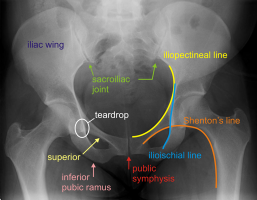

AP: identify iliopectineal line (anterior column), ilioischial line (posterior column), the anterior lip, the posterior
lip, the tear drop (formed by the outer wall of the obturator canal and outer aspect of the acetabular fossa) and the
weight-bearing surface of the acetabulum
Iliopectineal and ilioischial lines should be smooth and uninterrupted
Ilioischial line should pass through the tear drop, otherwise posterior column is disrupted
Shenton's Line: formed by superior aspect of obturator foramen and inferior femoral neck
In the setting of trauma, disruption may imply femoral neck fracture or hip dislocation
Gull sign: spike of bone that protrudes laterally from acetabulum
Implies posterior wall fracture

Normal AP pelvis
Judet views:
Iliac oblique (45° ER): the ipsilateral iliac wing is seen en face
Visualizes the posterior column, iliac wing and the anterior wall
Obturator oblique (45° IR): the ipsilateral obturator ring is seen en face
Visualizes the anterior column and posterior wall
Spur sign: bone fragment extending from ilium that remains attached to SI joint
- Usually located just lateral to the weight-bearing dome of the acetabulum
- Pathognomonic for both column fracture pattern
Roof arc angle: measured on AP (for transverse fractures, defined as medial roof arc angle), obturator oblique (for
anterior column fractures, defined as anterior roof arc angle) and iliac oblique (for posterior column fractures, defined as
posterior roof arc angle)
Formed by the angle between a vertical line through the geometric center of the acetabulum and another through the
fracture line
A minimum medial roof arc angle of 45°, anterior roof arc angle of 25° or posterior roof arc angle of 70° suggests a
sufficient weight-bearing dome is present and thus considerable for nonoperative treatment
Medial roof arc angle of 45° corresponds with > 10 mm of intact acetabular dome, measured from the apex, as
visualized by CT
CT: necessary for pre-operative planning
Demonstrates fragment size, displacement, comminution, impaction, loose fragments and associated injuries to the
pelvis and proximal femur